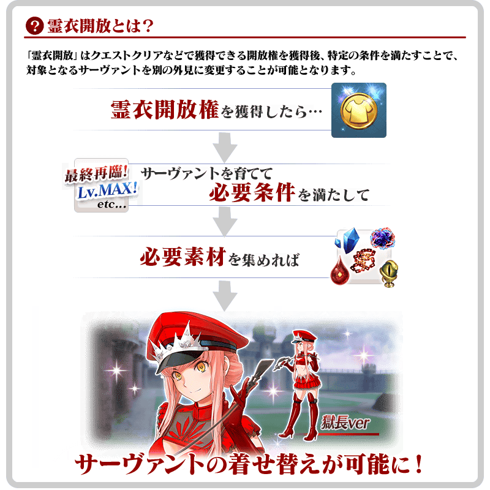
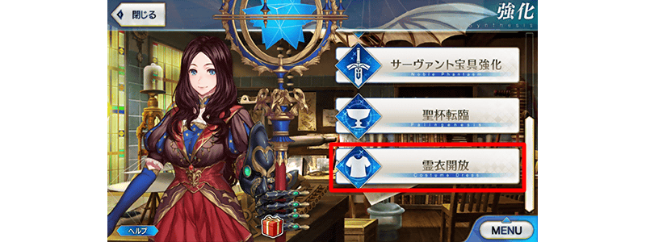
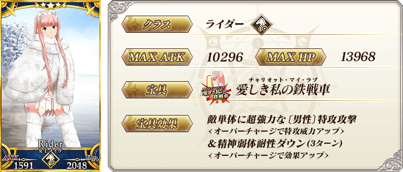
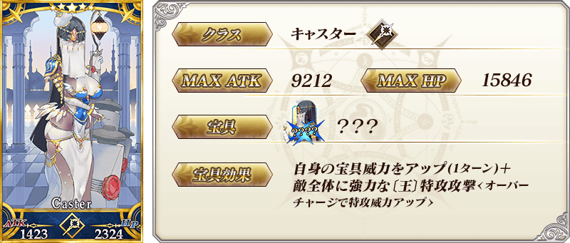
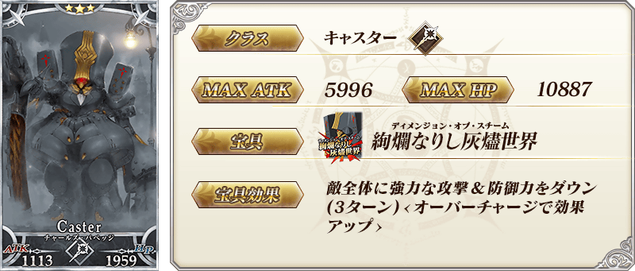
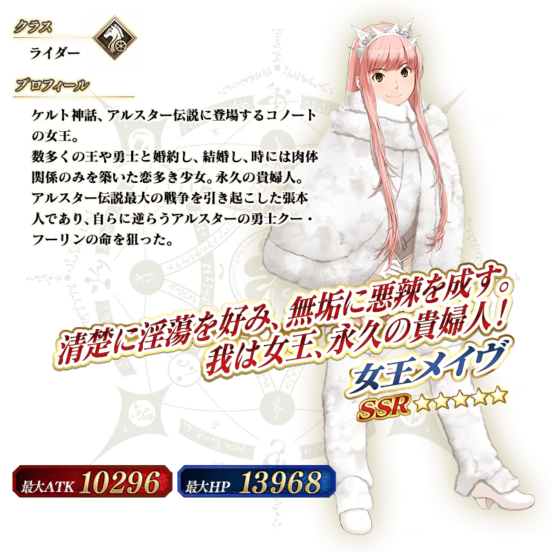
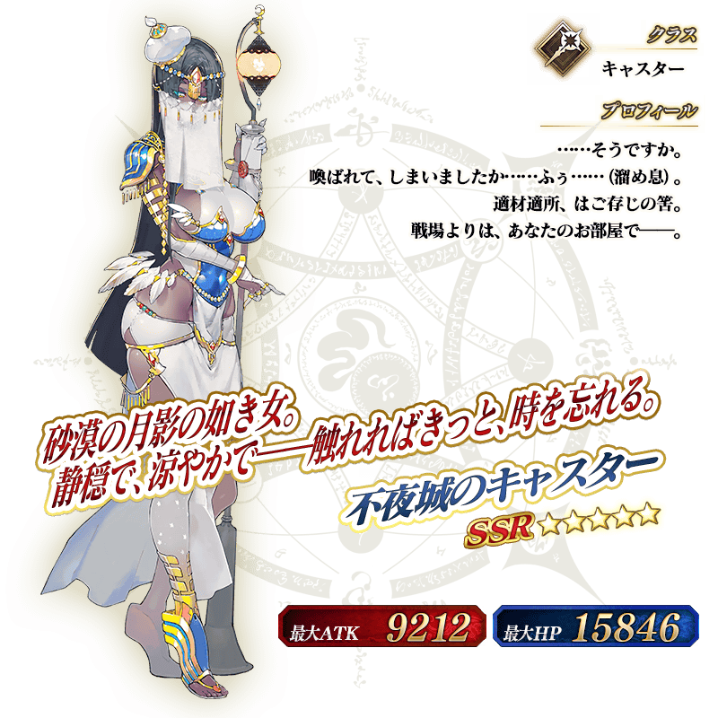

◆「復刻 Death Jail・夏日逃脫 ～罪與絶望的梅芙大監獄2017～Pick Up2召喚(每日交替)」期間◆
期間:2018年7月5日(四) 23:00～7月13日(五) 11:59
舉辦期間限定「復刻 Death Jail・夏日逃脫 ～罪與絶望的梅芙大監獄2017～Pick Up2召喚(每日交替)」！
從在期間限定活動「復刻:Death Jail・夏日逃脫 ～罪與絶望的梅芙大監獄2017～ 輕量版」登場的Servant之中，「★5(SSR)女王梅芙」「★5(SSR)不夜城的Caster」登場！
變更在2017年舉辦的「Death Jail・夏日逃脫 ～罪與絶望的梅芙大監獄2017～ Pick Up2召喚」一部份內容進行復刻。
本次包含上述Pick Up 3位的Servant！
「★5(SSR)女王梅芙」「★5(SSR)不夜城的Caster」以每日交替Pick Up，「★3(R)查爾斯・巴貝奇」常駐Pick Up！
※女王梅芙、不夜城的Caster、查爾斯・巴貝奇在Pick Up期間結束後仍會在故事召喚被抽出。
※Pick Up期間中，女王梅芙就算通過第五特異點前也能入手。
※關於真名尚未判明的Servant，透過主線關卡的進行會讓Servant及一部份寶具的名稱變化。
詳情請在聖晶石召喚畫面左下的召喚詳細確認。
另外，「復刻 Dead Heat・夏日競賽！ ～夢與希望的伊絲塔盃2017～Pick Up召喚(每日交替)」限定概念禮裝「★5(SSR)サマー・リトル」「★4(SR)ホワイト・クルージング」「★3(R)シュガー・バケーション」與「復刻 Death Jail・夏日逃脫 ～罪與絶望的梅芙大監獄2017～Pick Up召喚(每日交替)」限定概念禮裝「★5(SSR)真夏のひと時」「★4(SR)キング・ジョーカー・ジャック」「★3(R)カルデア・ビーチバレー」也以期間限定Pick Up！
裝備期間限定概念禮裝的話，在期間限定活動「復刻:Dead Heat・夏日競賽！ ～夢與希望的伊絲塔盃2017～ 輕量版」や「復刻:Death Jail・夏日逃脫 ～罪與絶望的梅芙大監獄2017～ 輕量版」中會提升活動専用道具的掉落獲得數。
※「★3(R)シュガー・バケーション」「★3(R)カルデア・ビーチバレー」在Pick Up期間中，也能在友情點數召喚獲得。
※請注意自友情點數召喚抽出「★3(R)シュガー・バケーション」「★3(R)カルデア・ビーチバレー」在自動變還設定登錄★3(R)概念禮裝的情況，會變成自動變還的對象。
Pick Up期間中，Pick UpServant、期間限定概念禮裝的出現機率提升！
10次召喚中確定1張★4(SR)以上和確定1位★3(R)以上的Servant！
※確定★4(SR)以上包含Servant和概念禮裝。
| 每日交替Pick Up期間 | 每日交替Pick Up內容 |
|---|---|
| 7月6日(四) 23:00～7月6日(五) 22:59 | 女王梅芙 查爾斯・巴貝奇 |
| 7月6日(五) 23:00～7月7日(六) 22:59 | 不夜城的Caster 查爾斯・巴貝奇 |
| 7月7日(六) 23:00～ 7月11日(三) 22:59 |
女王梅芙 不夜城的Caster 查爾斯・巴貝奇 |
| 7月11日(三) 23:00～7月12日(四) 22:59 | 女王梅芙 查爾斯・巴貝奇 |
| 7月12日(四) 23:00～7月13日(五) 11:59 | 不夜城的Caster 查爾斯・巴貝奇 |
※請注意會以每日交替變更Pick Up的Servant。
挑戰在通過期間限定活動「復刻:Death Jail・夏日逃脫 ～罪與絶望的梅芙大監獄2017～ 輕量版」主線關卡後出現的靈衣開放權獲得關卡，得到「★5(SSR)女王梅芙」的靈衣開放權吧！
想開放「★5(SSR)女王梅芙」靈衣「魅惑的獄長樣式」的話，除了靈衣開放權外必須再加上以下的開放條件和素材。
※在期間限定活動「復刻:Death Jail・夏日逃脫 ～罪與絶望的梅芙大監獄2017～ 輕量版」復刻靈衣的Servant只有「★5(SSR)女王梅芙」。
※「★5(SSR)女王梅芙」的靈衣開放權只限期間限定活動「復刻:Death Jail・夏日逃脫 ～罪與絶望的梅芙大監獄2017～ 輕量版」的舉辦期間才能取得。
※在上次舉辦時獲得過「靈衣開放權」的情況，於「復刻輕量版活動」的通過報酬會將「靈衣開放權」變更成「稀有稜鏡」。
做為另1個的通過報酬「呼符1張」不會變更。
※請注意靈衣開放權若未持有對象Servant的話，無法進行Servant的換裝。

※「靈衣開放」後自動切換戰鬥角色和圖示。若想回到「靈衣開放」前的狀態和變成其他再臨階段的情況，可自Servant詳細畫面變更。
※「靈衣開放」只變更Servant的外觀，職階和能力等並無變化。
※請注意一部份的語音並無變化。

「靈衣開放」可自強化畫面選擇。
介紹以期間限定復刻中的女王梅芙靈衣「魅惑的獄長樣式」寶具演出！
在「Fate/Grand Order」官方網站內的公告中，公開了「★5(SSR)女王梅芙」(靈衣開放後)的寶具演出。敬請確認。




 |
★★★★★SSR |

 |
★★★★★SSR |
 |
★★★★SR |

 |
★★★★SR |
 |
★★★R |

 |
★★★R |


介紹女王梅芙、不夜城的Caster的寶具演出！
在「Fate/Grand Order」官方網站內的公告中，公開了「★5(SSR)女王梅芙」「★5(SSR)不夜城的Caster」的寶具演出。敬請確認。
關於「復刻:Dead Heat・夏日競賽！ ～夢與希望的伊絲塔盃2017～ 輕量版」及「復刻:Death Jail・夏日逃脫 ～罪與絶望的梅芙大監獄2017～ 輕量版」詳情請自下述橫幅確認。